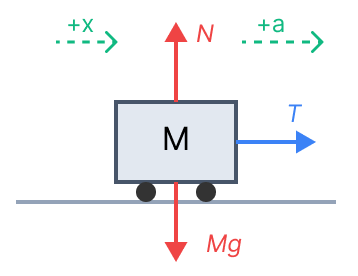
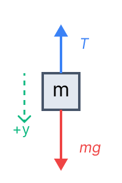
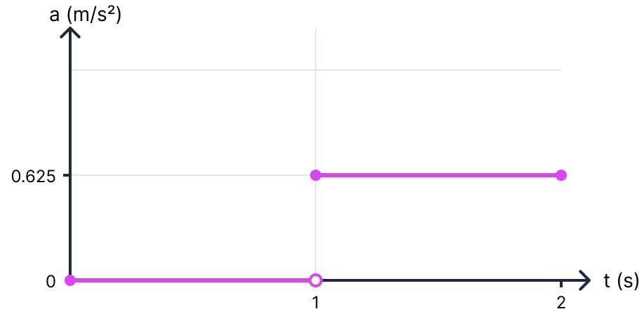
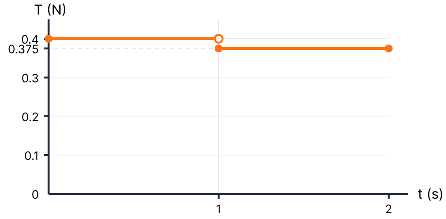

א' הגדרת יחידת הכוח "ניוטון"
1. מה נתון:
השאלה תאורטית ומבקשת מאיתנו להגדיר יחידת מידה פיזיקלית בהתבסס על החוק השני של ניוטון.
2. מה מחפשים:
הגדרה מילולית ומדויקת ליחידה "ניוטון" (Newton) המסומנת באות \( \text{N} \).
3. נוסחאות בשימוש:
מתוך דף הנוסחאות (דינמיקה):
4. הצבה ופתרון:
נציב את היחידות הבסיסיות (MKS) לתוך החוק השני של ניוטון:
מכאן נגזור את ההגדרה המילולית. ההגדרה מתארת קשר בין כוח, מסה ותאוצה.
תמיד כדאי לזכור שהיחידות בפיזיקה מספרות לנו סיפור. ה"ניוטון" אינו יחידה בסיסית, אלא יחידה מורכבת שמורכבת מהיחידות הבסיסיות של מסה (קילוגרם), מרחק (מטר) וזמן (שנייה). שימוש ביחידות תקניות (MKS) מבטיח שהמשוואות שלנו "יעבדו" היטב.
ב' גרף תאוצת הקרונית כפונקציה של הזמן
1. מה נתון:
- מסת הקרונית: \( M = 0.6 \text{ kg} \) (כבר ביחידות MKS).
- מסת המשקולת התלויה: \( m = 0.04 \text{ kg} \) (כבר ביחידות MKS).
- תאוצת הכובד: \( g = 10 \text{ m/s}^2 \).
- מצב התחלתי (\( t=0 \) עד \( t=1\text{ s} \)): המערכת מוחזקת במנוחה, כלומר גודל המהירות הוא אפס ולא משתנה.
- ברגע \( t=1\text{ s} \): המערכת משוחררת ממנוחה ואין חיכוך.
2. מה מחפשים:
לשרטט גרף של גודל תאוצת הקרונית \( a \) מול הזמן \( t \), מרגע \( t=0 \) ועד \( t=2\text{ s} \), כולל חישובים מפורטים לשני פרקי הזמן.
3. נוסחאות בשימוש:
4. הצבה ופתרון:
פרק זמן ראשון: \( 0 \le t < 1 \text{ s} \)
התלמיד מחזיק את הקרונית במנוחה. מכיוון שהקרונית במנוחה ומהירותה לא משתנה (נשארת אפס), לפי החוק הראשון של ניוטון, שקול הכוחות שווה לאפס, והתאוצה היא אפס.
פרק זמן שני: \( 1 \text{ s} \le t \le 2 \text{ s} \)
התלמיד מרפה מהקרונית. כעת, משקלה של המשקולת \( m \) מושך את המערכת. נשרטט תרשים כוחות (FBD) עבור כל גוף בנפרד ונקבע צירי ייחוס חיוביים עם כיוון התנועה (ימינה לקרונית, ולמטה למשקולת):
קרונית (M)

משקולת (m)

נרשום את משוואות החוק השני של ניוטון עבור כל גוף בציר התנועה (כיוון חיובי ככיוון התאוצה \( a \)):
נציב את משוואה (1) לתוך משוואה (2) (חיבור המשוואות מבטל את המתיחות \( T \)):
כעת נציב את הנתונים המדויקים (\( g = 10 \text{ m/s}^2 \)):
כעת, נשרטט את הגרף. התאוצה היא אפס בשנייה הראשונה, וקופצת לערך קבוע של \( 0.625 \) בשנייה השנייה.

גרף תאוצה-זמן. שימו לב לקפיצה הפתאומית בתאוצה ברגע השחרור.
התאוצה מ- \( t=1\text{s} \) עד \( t=2\text{s} \) היא קבועה ושווה ל- \( 0.625 \text{ m/s}^2 \).
בפתרון הראשי הקפדנו לכתוב משוואות לכל גוף בנפרד (שזו הדרך הבטוחה והקלאסית בפיזיקה). אבל, כדאי לדעת שכאשר כלל לא שואלים אותנו על כוחות פנימיים (כמו המתיחות \( T \)), אפשר ורצוי להתייחס לשני הגופים כאל "מערכת אחת" שנעה יחד! המסה הכוללת המאיצה של המערכת היא \( M_{total} = M + m = 0.6 + 0.04 = 0.64 \text{ kg} \). הכוח החיצוני היחיד המניע את המערכת הזו (לאורך ציר התנועה המשותף) הוא כוח הכובד של המשקולת התלויה, גודלו הוא \( F_{ext} = m \cdot g = 0.04 \cdot 10 = 0.4 \text{ N} \). כעת נפעיל את החוק השני של ניוטון על המערכת השלמה במשוואה אחת פשוטה: \( \Sigma F_{ext} = M_{total} \cdot a \implies 0.4 = 0.64 \cdot a \implies a = \frac{0.4}{0.64} = 0.625 \text{ m/s}^2 \). קיצור דרך סופר-אלגנטי המדלג לחלוטין על חישוב המתיחות! (אך שימו לב - בסעיף ג' כן נשאלים על המתיחות, ולכן העבודה היסודית שעשינו כאן תשתלם לנו מיד).
ג' גרף המתיחות בחוט כפונקציה של הזמן
1. מה נתון:
התאוצות שחישבנו בסעיף הקודם נתונות לנו כעת כבסיס לחישוב:
- עבור \( 0 \le t < 1 \text{ s} \): התאוצה \( a = 0 \). המערכת במנוחה.
- עבור \( 1 \text{ s} \le t \le 2 \text{ s} \): התאוצה \( a = 0.625 \text{ m/s}^2 \).
2. מה מחפשים:
לשרטט גרף של מתיחות החוט \( T \) מול הזמן \( t \), מרגע \( t=0 \) ועד \( t=2\text{ s} \), כולל חישובים מפורטים לשני פרקי הזמן.
3. נוסחאות בשימוש:
4. הצבה ופתרון:
פרק זמן ראשון: \( 0 \le t < 1 \text{ s} \) (מנוחה)
התלמיד מחזיק את הקרונית ולכן הקרונית לא זזה. אם נסתכל על המשקולת \( m \), פועלים עליה כוח הכובד כלפי מטה ומתיחות החוט כלפי מעלה. מכיוון שתאוצתה אפס:
(הערה: אמנם התלמיד מפעיל כוח על הקרונית, אבל המתיחות בחוט נקבעת אך ורק על ידי המשקולת התלויה שמושכת אותו, כיוון שאין כוחות אחרים הפועלים עליה מלבד הכובד והחוט).
פרק זמן שני: \( 1 \text{ s} \le t \le 2 \text{ s} \) (תנועה מואצת)
כעת המערכת משוחררת ומאיצה. נמצא את המתיחות \( T_2 \) על ידי הצבת התאוצה שמצאנו ( \( a = 0.625 \text{ m/s}^2 \) ) באחת ממשוואות התנועה מסעיף ב'. נשתמש במשוואה של הקרונית \( M \) כי היא פשוטה יותר:
נוכל לבדוק את עצמנו עם המשוואה השנייה: \( T = mg - ma = 0.4 - (0.04 \cdot 0.625) = 0.4 - 0.025 = 0.375 \text{ N} \). התוצאה זהה, מה שמאשר את החישוב שלנו.
כעת, נשרטט את הגרף. המתיחות מתחילה מ- \( 0.4\text{ N} \) וצונחת באופן פתאומי ל- \( 0.375\text{ N} \) ברגע השחרור.

גרף מתיחות-זמן בקנה מידה אחיד מאפס. שנתות מרווחות ב-0.1 ניוטון להמחשת הפרופורציה.
המתיחות מ- \( t=1\text{s} \) עד \( t=2\text{s} \) קבועה ושווה ל- \( 0.375 \text{ N} \).
האם זה הגיוני שהמתיחות ירדה כאשר המערכת שוחררה? בהחלט! כשהמערכת במנוחה, החוט צריך לשאת את כל משקלה של המשקולת ( \( mg \) ) כדי לא לאפשר לה ליפול. אך כאשר המערכת מאיצה כלפי מטה, המשקולת "בורחת" במקצת מהחוט, ולכן החוט צריך להפעיל כוח קטן יותר מאשר המשקל כדי עדיין לאפשר תאוצה מטה. תופעה זו מודגמת בנוסחה \( mg - T = ma \) שמראה כי \( T = mg - ma \), כלומר המתיחות קטנה מהמשקל ככל שהתאוצה גדלה.